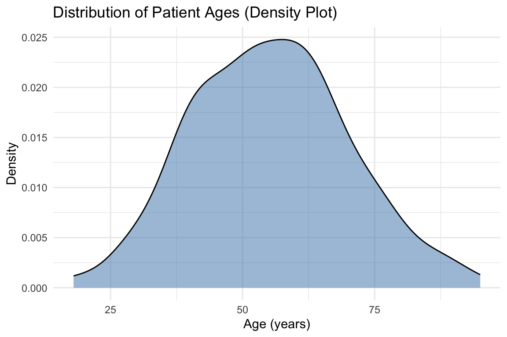
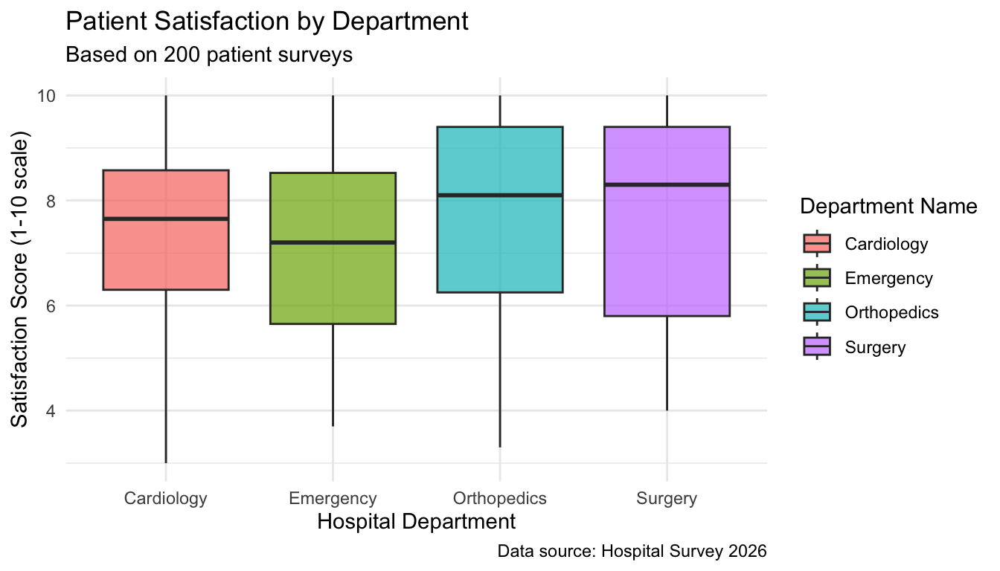
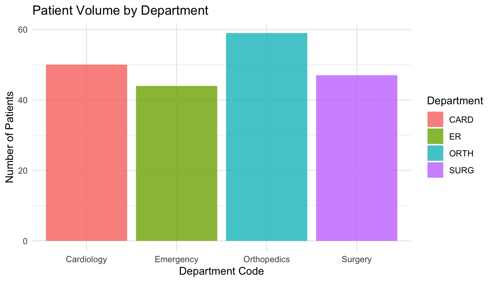
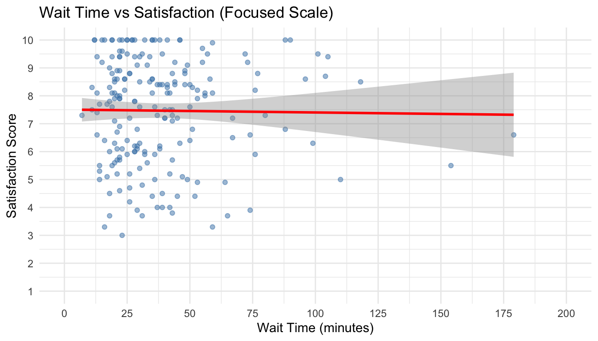

Data Visualization
1 Introduction to Data Visualization
1.1 Before We Start: Why Visualization Matters
Look at these two ways of presenting the same patient satisfaction data across different hospital departments:
| Department | Avg Satisfaction | Patients | Median Wait (min) |
|---|---|---|---|
| Cardiology | 7.2 | 52 | 45 |
| Emergency | 6.8 | 48 | 67 |
| Orthopedics | 7.9 | 51 | 38 |
| Surgery | 7.4 | 49 | 52 |
Which format helped you identify the problem department faster?
The visualization reveals the issue more easily. The table requires reading and mentally comparing numbers, taking much longer and risking missed insights.
Today you’ll learn to various visualization methods that:
- Reveal insights instantly instead of hiding them in rows of numbers
- Communicate clearly to decision makers who need to understand the results quickly
- Support better decisions by making patterns and problems obvious
1.2 Why Visualize Data?
Healthcare managers make critical decisions daily that affect patient outcomes, operational efficiency, and financial performance. Data visualization transforms complex healthcare data into clear, actionable insights that support better decision-making.
Consider these scenarios:
- Hospital readmissions: Understanding when patients return to the hospital within 30 days after being discharged, a key indicator of care quality and follow-up effectiveness
- Patient satisfaction: Identifying which factors (wait times, communication, facility cleanliness) most strongly influence how patients rate their experience
- Resource utilization: Tracking how many beds are occupied at different times to optimize nurse and doctor staffing schedules
- Quality metrics: Monitoring patient outcomes (recovery rates, complication rates) across different departments or over time
Effective visualization helps healthcare managers:
- Identify patterns and trends that might be missed in tables of numbers
- Communicate findings clearly to diverse stakeholders (doctors, nurses, administrators, executives)
- Support evidence-based decisions with visual evidence
- Monitor performance against targets and compare to other similar organizations
1.3 Why Use R for Visualization?
While tools like Excel can create basic charts, R offers several advantages for healthcare analytics:
- Reproducibility: Your code documents exactly how visualizations were created
- Flexibility: Unlimited customization options for publication quality graphics
- Integration: Seamlessly combine data processing, analysis, and visualization
Most importantly, the same code can be reused with updated data, saving time and ensuring consistency.
1.4 What Visualizations Will We Cover Today?
In this session, we’ll learn to create the following essential visualizations:
- Histograms: Understanding distributions of continuous data (e.g., patient ages, wait times)
- Bar Charts: Comparing categories (e.g., patient volumes by department)
- Box Plots: Summarizing distributions and comparing groups (e.g., satisfaction scores across departments)
- Scatterplots: Exploring relationships between two continuous variables (e.g., wait time vs. satisfaction)
- Grouped Visualizations: Adding layers to compare subgroups using color, facets, and aesthetics
Each visualization type serves a specific analytical purpose, and by the end of this session, you’ll know when and how to use each one.
2 Learning Objectives
By the end of this session, you will be able to:
- Apply the grammar of graphics approach to build layered visualizations using
ggplot2 - Select appropriate visualization types based on your data structure and analytical questions
- Create and customize professional visualizations including histograms, bar charts, box plots, and scatterplots for management decision-making
3 The Grammar of Graphics
3.1 (Understanding ggplot2)[https://ggplot2-book.org/]
The ggplot2 package in R implements a “grammar of graphics” approach: a systematic way to build visualizations by combining independent components.
Think of creating a visualization like building with layers:
- Data: What dataset are you visualizing?
- Aesthetics (aes): What variables map to visual properties (x-axis, y-axis, color, size)?
- Geometries (geom): What type of visualization (points, bars, lines)?
- Scales: How should data values translate to visual properties?
- Themes: What should the overall appearance be?
Every ggplot follows this basic template:
# Basic structure: data + aesthetics + geometry
ggplot(data = <DATA>, mapping = aes(<MAPPINGS>)) +
<GEOM_FUNCTION>() +
<ADDITIONAL_LAYERS>3.2 Key Concept: Layers
Visualizations in ggplot2 are built by adding layers with the + operator. This makes it easy to:
- Start with a basic plot and progressively refine it
- Reuse code by changing just one layer
- Combine multiple types of visualizations in one plot
3.3 Commonly Used ggplot2 Components
Beyond the basic template, you’ll frequently use these additional components:
3.3.1 Geometric Objects (geom_*)
The visual representation of your data:
geom_point(): Scatterplots (individual data points)geom_line(): Line plots (connecting points, often for time series)geom_bar(): Bar charts (heights represent counts or values)geom_histogram(): Histograms (distribution of continuous data)geom_boxplot(): Box plots (distribution summary with quartiles)geom_smooth(): Trend lines (fitted curves through data)
3.3.2 Labels and Titles (labs)
Add descriptive text to your plot:
labs(
title = "Main title",
subtitle = "Additional context",
x = "X-axis label",
y = "Y-axis label",
color = "Legend title",
caption = "Data source or notes"
)3.3.3 Scales (scale_*)
Control how data values map to visual properties:
scale_x_continuous(),scale_y_continuous(): Adjust axis breaks, limits, transformationsscale_color_brewer(),scale_fill_brewer(): Use professional color palettesscale_color_manual(),scale_fill_manual(): Specify custom colors
3.3.4 Facets (facet_*)
Create small multiples (separate panels for subgroups):
facet_wrap(~ variable): Wrap panels in a gridfacet_grid(row_var ~ col_var): Arrange panels by two variables
3.3.5 Themes (theme_*)
(Control the overall appearance)[https://ggplot2-book.org/themes.html]:
theme_minimal(): Clean, minimal design (recommended for presentations)theme_classic(): Traditional look with axis linestheme_bw(): Black and white with gridtheme(): Customize specific elements (text size, legend position, etc.)
4 Example Dataset: Patient Satisfaction Survey
Before creating a dataset for data visualization activities, let’s load required packages.
library(ggplot2)
library(dplyr)
library(tidyr)
library(readr)
library(patchwork)
set.seed(2026)For this lecture, we’ll use a simulated dataset from a patient satisfaction survey conducted across multiple hospital departments.
# Simulate patient satisfaction data
patient_data <- data.frame(
patient_id = 1:200, # Create unique IDs for 200 patients
age = round(rnorm(200, mean = 55, sd = 15)), # Generate ages: mean=55, standard deviation=15
# Randomly assign patients to departments
department = sample(c("Cardiology", "Orthopedics", "Emergency", "Surgery"),
200, replace = TRUE),
# Generate satisfaction scores: mean=7.5, standard deviation=1.8
satisfaction_score = round(rnorm(200, mean = 7.5, sd = 1.8), 1),
# Generate wait times with right-skewed distribution (some very long waits)
wait_time_minutes = round(rlnorm(200, meanlog = 3.5, sdlog = 0.6)),
# Generate length of stay with right-skewed distribution
length_of_stay_days = round(rlnorm(200, meanlog = 1.2, sdlog = 0.8), 1)
) %>%
mutate(
# Ensure satisfaction scores are between 1-10 (cap at boundaries)
satisfaction_score = pmin(pmax(satisfaction_score, 1), 10),
# Ensure age is realistic (between 18-95 years)
age = pmin(pmax(age, 18), 95)
)
# Display first 10 rows to see the data structure
head(patient_data, 10) patient_id age department satisfaction_score wait_time_minutes
1 1 63 Emergency 7.2 67
2 2 39 Emergency 7.2 40
3 3 57 Emergency 6.0 28
4 4 54 Orthopedics 9.2 73
5 5 45 Surgery 6.0 32
6 6 18 Orthopedics 6.1 29
7 7 44 Emergency 5.9 36
8 8 40 Emergency 10.0 22
9 9 57 Surgery 8.5 34
10 10 48 Surgery 8.6 58
length_of_stay_days
1 8.3
2 1.9
3 4.2
4 3.8
5 5.1
6 3.3
7 4.2
8 5.5
9 0.6
10 2.7Dataset Variables:
| Variable | Description | Type | Possible Values |
|---|---|---|---|
patient_id |
Unique patient identifier | Numeric | 1 to 200 |
age |
Patient age in years | Numeric (continuous) | 18 to 95 years |
department |
Hospital department | Categorical | “Cardiology”, “Orthopedics”, “Emergency”, “Surgery” |
satisfaction_score |
Overall satisfaction rating | Numeric (continuous) | 1.0 to 10.0 (in 0.1 increments) |
wait_time_minutes |
Wait time before seeing provider | Numeric (continuous) | Varies, typically 10-200 minutes |
length_of_stay_days |
Hospital length of stay | Numeric (continuous) | Varies, typically 0.5-10 days |
5 Visualizing Single Variables
5.1 Histograms for Continuous Variables
Purpose:
Histograms reveal the distribution pattern of continuous data, showing where values cluster, whether the distribution is symmetric or skewed, and identifying potential outliers.
They help answer questions like “What’s the typical age range of our patients?” or “Are most wait times reasonable, or do we have a problem?”
When to use:
- Examining the distribution of age, wait times, length of stay, or any continuous measure.
Let’s draw a histogram for the patients’ age distribution using ggplot2 package.
# Basic histogram: minimal code to see the distribution
ggplot(data = patient_data, mapping = aes(x = age)) + # Specify data and map age to x-axis
geom_histogram() # Add histogram geometry (bars showing frequency)
Improving the histogram:
We can edit and change the histogram by changing and adding additional layers and conditions.
# Improved histogram with better styling and labels
ggplot(patient_data, aes(x = age)) + # Specify data and aesthetic mapping
geom_histogram(binwidth = 5, # Set bin width to 5 years per bar
fill = "steelblue", # Fill color for bars
color = "white") + # Border color (creates separation between bars)
labs(title = "Distribution of Patient Ages", # Add descriptive title
x = "Age (years)", # Label x-axis with units
y = "Number of Patients") + # Label y-axis
theme_minimal() # Apply clean, minimal theme (removes gray background)
Components used:
geom_histogram(): Creates histogram by dividing continuous variable into binsbinwidth = 5: Controls bin size (each bar = 5-year age range)fillandcolor: Control bar appearance (interior and border colors)labs(): Adds title and axis labels for claritytheme_minimal(): Applies professional, clean appearance
Practice Checkpoint 1
ImportantTry It Yourself! (5 minutes)
Pause here! Open week04_visualization_practice.qmd and complete:
- Task 1.1: Create a histogram of Emergency Department wait times
This will verify your setup is working and you can create histograms on your own.
After 5 minutes, we’ll continue with the lecture.
→ We’ll practice histograms again in Activity 1, Task 1.6 (faceted histograms)
5.2 Density Plots: Smooth Alternative to Histograms
Purpose:
Density plots show the distribution of continuous data as a smooth curve rather than bars, making it easier to see the overall shape and compare multiple distributions without visual clutter.
They’re particularly useful when you want to overlay multiple groups on the same plot or when you want to emphasize the overall pattern rather than exact counts.
When to use:
- Showing distribution shape clearly, comparing distributions across multiple groups, or when smooth curves are easier to interpret than bars.
Basic density plot:
We can draw a density plot by adding geom_density component.
# Density plot showing smooth distribution curve
ggplot(patient_data, aes(x = age)) +
geom_density(fill = "steelblue", # Fill color under the curve
alpha = 0.5) + # Transparency (0.5 = 50% transparent)
labs(title = "Distribution of Patient Ages (Density Plot)",
x = "Age (years)",
y = "Density") + # Y-axis shows density, not counts
theme_minimal()
Components used:
geom_density(): Creates smooth density curve instead of histogram barsfillandalpha: Control the shaded area under the curve- Y-axis shows density (probability), not raw counts like histograms
Histogram vs. Density Plot:
- Histogram: Shows actual counts in bins, easier to interpret for beginners
- Density Plot: Shows smooth probability curve, better for comparing multiple groups
5.3 Bar Charts for Categorical Variables
Purpose:
Bar charts compare frequencies or counts across categories, making it easy to see which groups are larger or smaller.
They answer questions like “Which department serves the most patients?” or “How are our patients distributed across different categories?”
When to use:
- Showing patient counts by department, admission type, insurance status, or any categorical grouping.
Let’s visualize how many patients each hospital department have using a bar graph.
# Bar chart showing patient distribution across departments
ggplot(patient_data, aes(x = department)) + # Map department to x-axis
geom_bar(fill = "darkgreen", # Fill color for all bars
width = 0.5, # width of the bars
alpha = 0.7) + # Transparency level (0.7 = 70% opaque)
labs(title = "Patient Volume by Department", # Descriptive title
x = "Department", # X-axis label
y = "Number of Patients") + # Y-axis label
theme_minimal() # Clean theme
Components used:
geom_bar(): Automatically counts observations in each category and creates barsalpha = 0.7: Controls transparency (0 = fully transparent, 1 = fully opaque)width = 0.5: Controls bar width (close to 0: narrower, close to 1: wider)labs(): Adds clear labels and titletheme_minimal(): Professional appearance
5.4 Box Plots for Distribution Summary
Purpose:
Box plots provide a compact five-number summary of data distribution (minimum, 25th percentile, median, 75th percentile, maximum), making them ideal for identifying the typical range of values, spread, and outliers.
They’re particularly useful for comparing distributions across multiple groups at a glance.
When to use:
- Comparing distributions across groups, identifying outliers in metrics, or summarizing spread of continuous variables.
Let’s visualize patients’ satisfaction score using a box plot.
# Single box plot showing distribution of satisfaction scores
ggplot(patient_data, aes(x = "", # Empty x aesthetic for single box plot
y = satisfaction_score)) + # Map satisfaction to y-axis
geom_boxplot(fill = "coral", # Fill color for box
width = 0.2,
alpha = 0.6) + # Transparency level
labs(title = "Distribution of Patient Satisfaction Scores", # Title
x = "", # No x-axis label needed for single box
y = "Satisfaction Score (1-10)") + # Y-axis label with scale
theme_minimal() # Clean theme
Interpreting box plots:
- Box: Contains the middle 50% of data (25th to 75th percentile—this is called the interquartile range or IQR)
- Line in box: Median value (middle point where 50% of data falls above and below)
- Whiskers: Extend to 1.5 × IQR from the box edges
- Points beyond whiskers: Potential outliers (unusually high or low values)
Components used:
geom_boxplot(): Creates box-and-whisker plot showing distribution summaryaes(x = "", y = variable): Empty x for single box; y specifies the variable to summarizefillandalpha: Control appearancelabs(): Adds descriptive labels
6 Visualizing Relationships
So far, we’ve looked at how to visualize single variables: examining distributions and counts. But many important business questions involve relationships: Does one variable affect another? Do they move together or in opposite directions?
In this section, we’ll learn how to visualize relationships between variables to uncover patterns and inform decision-making.
6.1 Scatterplots for Two Continuous Variables
Purpose:
Scatterplots reveal relationships between two continuous variables: whether they move together (positive correlation), move in opposite directions (negative correlation), or show no clear pattern.
Each point represents one observation, making it easy to spot outliers and assess the strength of relationships.
When to use:
- Examining whether wait time affects satisfaction, whether age relates to length of stay, or exploring any relationship between two continuous measures.
Let’s show the relationship between wait time and patient satisfaction using a scatterplot.
# Basic scatterplot showing relationship between two variables
ggplot(patient_data, aes(x = wait_time_minutes, # Map wait time to x-axis
y = satisfaction_score)) + # Map satisfaction to y-axis
geom_point(alpha = 0.5, # Transparency (helps see overlapping points)
color = "darkblue") + # Color of all points
labs(title = "Relationship Between Wait Time and Satisfaction", # Descriptive title
x = "Wait Time (minutes)", # X-axis label with units
y = "Satisfaction Score (1-10)") + # Y-axis label with scale
theme_minimal() # Clean theme
While individual points show the raw data, it can be helpful to add a trend line to make the overall pattern clearer. This is especially useful when you have many overlapping points or want to communicate the general direction of the relationship to stakeholders.
Adding a trend line:
# Scatterplot with linear trend line showing direction of relationship
ggplot(patient_data, aes(x = wait_time_minutes, y = satisfaction_score)) +
geom_point(alpha = 0.5, color = "darkblue") + # Add scatter points
geom_smooth(method = "lm", # Add linear regression line ("lm" = linear model)
se = TRUE, # Show confidence interval (shaded region around line)
color = "red") + # Color of trend line
labs(title = "Wait Time and Satisfaction with Linear Trend",
x = "Wait Time (minutes)",
y = "Satisfaction Score (1-10)") +
theme_minimal()
Components used:
geom_point(): Plots individual data points (each patient is one dot)geom_smooth(method = "lm"): Adds linear regression trend line to show overall patternse = TRUE: Displays confidence interval (shaded area showing uncertainty in the trend)alpha = 0.5: Makes points semi-transparent so overlapping points are visible- Multiple layers: Points + trend line are added as separate layers using
+
Practice Checkpoint 2
ImportantTry It Yourself! (5 minutes)
Open week04_visualization_practice.qmd and complete:
- Task 1.3: Create a scatterplot showing the relationship between ED census and wait times
This will help you practice exploring relationships between two continuous variables.
Tip: Remember to add a trend line with geom_smooth() to see the pattern clearly!
→ We’ll practice more scatterplots in Tasks 1.4, 2.4, and 2.7
7 Grouped Comparisons
7.1 Comparing Groups with Box Plots
Purpose:
Grouped box plots let you compare distributions across categories side-by-side, revealing whether different groups (e.g., departments) have similar or different patterns.
This helps answer questions like “Do certain departments consistently have higher satisfaction?” or “Which group shows more variability?”
When to use:
- Comparing continuous outcomes across different groups or categories.
# Box plots comparing satisfaction across departments
ggplot(patient_data, aes(x = department, # Categories on x-axis
y = satisfaction_score, # Continuous variable on y-axis
fill = department)) + # Color each box by department
geom_boxplot(alpha = 0.7, # Create box plots with transparency
width = 0.3) + # Width of the boxes
labs(title = "Patient Satisfaction by Department",
x = "Department",
y = "Satisfaction Score (1-10)") +
theme_minimal() +
theme(legend.position = "none") # Remove legend (redundant with x-axis labels)
Components used:
aes(fill = department): Colors boxes by group automaticallytheme(legend.position = "none"): Removes redundant legend since x-axis already shows departments
7.2 Bar Charts Showing Averages by Group
Purpose:
While bar charts can show counts (as we saw earlier), they’re also excellent for comparing average values across groups.
This is particularly useful for comparing mean satisfaction scores, average wait times, or other metrics across departments or categories.
When to use:
- Comparing average (mean) values across different groups (e.g., “What’s the average satisfaction score for each department?”)
Let’s draw a bar graph that shows the average satisfaction score across departments. First, we need to calculate the average satisfaction score for each department:
# Calculate mean satisfaction by department using group_by and summarize
dept_summary <- patient_data %>% # Take patient data, AND THEN
group_by(department) %>% # Group by department, AND THEN
summarize(mean_satisfaction = mean(satisfaction_score), # Calculate mean
n = n()) # Count number of patients (for reference)
# View the summary
dept_summary# A tibble: 4 × 3
department mean_satisfaction n
<chr> <dbl> <int>
1 Cardiology 7.39 50
2 Emergency 7.09 44
3 Orthopedics 7.6 59
4 Surgery 7.74 47Now we can visualize these averages using a bar chart:
# Bar chart showing average satisfaction by department
ggplot(dept_summary, aes(x = department, # Department on x-axis
y = mean_satisfaction, # Average satisfaction on y-axis
fill = department)) + # Color bars by department (optional)
geom_col(alpha = 0.8) + # geom_col() adds bars using pre-calculated values
labs(title = "Average Patient Satisfaction by Department",
x = "Department",
y = "Average Satisfaction Score (1-10)") +
theme_minimal() +
theme(legend.position = "none") + # Remove redundant legend
ylim(0, 10) # Set y-axis limits to match satisfaction scale
Key Difference - geom_bar() vs geom_col():
geom_bar(): Automatically counts observations in each category (used earlier for patient volume)- Use when: You want to count how many observations in each group
geom_col(): Plots pre-calculated values (heights you specify)- Use when you’ve already calculated means, totals, or other summary statistics
- In this example: We calculated average satisfaction, then plotted those values
Alternative approach - Let ggplot calculate the mean:
You can also have ggplot calculate the mean for you without creating a summary first:
# Alternative: Let geom_bar calculate the mean automatically
ggplot(patient_data, aes(x = department, y = satisfaction_score, fill = department)) +
geom_bar(stat = "summary", fun = "mean", alpha = 0.8) + # stat="summary" calculates mean
labs(title = "Average Patient Satisfaction by Department",
x = "Department",
y = "Average Satisfaction Score (1-10)") +
theme_minimal() +
theme(legend.position = "none") +
ylim(0, 10)Components used:
group_by() %>% summarize(): Calculates summary statistics for each groupgeom_col(): Creates bars using pre-calculated values (heights you specify)geom_bar(stat = "summary", fun = "mean"): Alternative that calculates mean automaticallyylim(): Sets y-axis limits (important for bar charts to provide proper context)
When to use bar charts for means vs. box plots:
- Bar chart of means: Shows the average value clearly, good for presentations
- Box plot: Shows full distribution (median, quartiles, outliers), better for data exploration
Both are useful, so choose based on your audience and message!
7.3 Grouped Scatterplots
Purpose:
Adding color or shape by group in scatterplots reveals whether relationships differ across subgroups.
For example, does wait time affect satisfaction differently across different departments?
Let’s check the relationship between wait time and satisfaction across different departments.
# Scatterplot with separate colors and trend lines for each department
ggplot(patient_data, aes(x = wait_time_minutes,
y = satisfaction_score,
color = department)) + # Color points and lines by department
geom_point(alpha = 0.6, # Add semi-transparent points
size = 2) + # Increase point size for visibility
geom_smooth(method = "lm", # Add separate trend line for each department
se = FALSE) + # Don't show confidence intervals (keeps plot cleaner)
labs(title = "Wait Time and Satisfaction by Department",
x = "Wait Time (minutes)",
y = "Satisfaction Score (1-10)",
color = "Department") + # Label for color legend
theme_minimal()
Components used:
aes(color = department): Assigns different colors to each department (applied to both points and lines)geom_smooth()with grouped color: Creates separate trend line for each groupse = FALSE: Hides confidence intervals to reduce visual cluttersize = 2: Makes points larger for easier viewing
Interpretation: This visualization shows whether the relationship between wait time and satisfaction differs across departments. Different slopes would indicate department-specific patterns.
7.4 Faceting: Small Multiples
Purpose:
Faceting creates separate panels (small multiples) for each group, making it easier to see within-group patterns without the visual clutter of overlapping groups.
This is particularly useful when comparing many groups or when you want to focus on each group’s individual pattern rather than comparing them directly.
# Faceted scatterplot: separate panel for each department
ggplot(patient_data, aes(x = wait_time_minutes, y = satisfaction_score)) +
geom_point(alpha = 0.5, # Add semi-transparent points
color = "steelblue") + # Same color for all panels
geom_smooth(method = "lm", # Add trend line to each panel
se = TRUE, # Show confidence interval
color = "darkred") + # Trend line color
facet_wrap(~ department, # Create separate panel for each department
nrow = 2) + # Arrange panels in 2 rows
labs(title = "Wait Time vs. Satisfaction Across Departments",
x = "Wait Time (minutes)",
y = "Satisfaction Score (1-10)") +
theme_minimal()
Components used:
facet_wrap(~ variable): Creates small multiples—separate panels for each value of the variablenrow = 2: Arranges panels in 2 rows (controls layout)- Same aesthetics across all panels: Makes comparisons easier since all use same scales
When to use faceting: When groups are too crowded on a single plot, when comparing many groups, or when you want to emphasize within-group patterns rather than between-group comparisons.
Important Note: The ~ symbol (tilde) in facet_wrap(~ department) means “by” or “split by”. Read it as: “create separate panels BY department.” This formula notation comes from R’s statistical modeling syntax, where outcome ~ predictor means “outcome explained by predictor.” In faceting, we’re saying “split the plot by this variable.”
🔧 Practice Checkpoint 3
ImportantTry It Yourself! (5 minutes)
Open week04_visualization_practice.qmd and complete:
- Task 1.6: Create faceted histograms showing wait times by acuity level
This will help you practice using facet_wrap() to compare distributions across multiple groups.
Remember: The syntax is facet_wrap(~ variable_name)
→ We’ll practice more faceting in Tasks 2.6 and 2.7
8 Data Structure for Visualization
8.1 Wide vs. Long Format
Purpose: Understanding data structure is critical for effective visualization. The same data can be organized in different ways, and ggplot2 works best with “long” format.
Many datasets come in “wide” format, but ggplot2 works best with “long” format data.
Wide format (one row per subject, multiple measurement columns):
| patient_id | age | satisfaction | wait_time |
|---|---|---|---|
| 1 | 45 | 8.2 | 35 |
| 2 | 67 | 6.5 | 67 |
- Each row = one patient
- Multiple measurements spread across different columns
Long format (one row per measurement, with variable name and value columns):
| patient_id | age | metric | value |
|---|---|---|---|
| 1 | 45 | satisfaction | 8.2 |
| 1 | 45 | wait_time | 35 |
| 2 | 67 | satisfaction | 6.5 |
| 2 | 67 | wait_time | 67 |
- Each row = one measurement (a patient appears multiple times)
- A “metric” column identifies WHICH variable is being measured
- A “value” column contains the actual measurement
Why long format?
- Easier to map to
ggplot2aesthetics (e.g.,color = metricto show multiple variables on one plot) - Enables easy grouping and faceting by variable type (e.g.,
facet_wrap(~ metric)) - Makes it simple to compare multiple measures in the same visualization
- Follows “tidy data” principles where each row represents one measurement
When to reshape: When you want to compare multiple (similar) variables (e.g., comparing satisfaction scores, wait times, and length of stay on the same plot or in faceted panels).
8.2 Converting Wide to Long
The pivot_longer() function from the tidyr package reshapes data from wide to long format.
# Convert wide data to long format
patient_long <- patient_data %>% # Start with original wide data
pivot_longer(
cols = c(satisfaction_score, wait_time_minutes), # Columns to pivot (make longer)
names_to = "metric", # New column name for the measure names
values_to = "value" # New column name for the values
)
# View the structure (note: each patient now has multiple rows)
head(patient_long, 10)# A tibble: 10 × 6
patient_id age department length_of_stay_days metric value
<int> <dbl> <chr> <dbl> <chr> <dbl>
1 1 63 Emergency 8.3 satisfaction_score 7.2
2 1 63 Emergency 8.3 wait_time_minutes 67
3 2 39 Emergency 1.9 satisfaction_score 7.2
4 2 39 Emergency 1.9 wait_time_minutes 40
5 3 57 Emergency 4.2 satisfaction_score 6
6 3 57 Emergency 4.2 wait_time_minutes 28
7 4 54 Orthopedics 3.8 satisfaction_score 9.2
8 4 54 Orthopedics 3.8 wait_time_minutes 73
9 5 45 Surgery 5.1 satisfaction_score 6
10 5 45 Surgery 5.1 wait_time_minutes 32 Understanding the Pipe Operator %>%:
The %>% operator (called the “pipe”) is used to chain operations together. Think of it as saying “and then”.
# Without pipe (nested):
head(pivot_longer(patient_data, cols = c(satisfaction_score, wait_time_minutes)))
# With pipe (easier to read):
patient_data %>% # Take patient_data, AND THEN
pivot_longer(...) %>% # Reshape it, AND THEN
head() # Show first rowsHow to read it: The %>% takes the result from the left side and passes it as the first argument to the function on the right side.
patient_data %>% filter(age > 50)means “take patient_data AND THEN filter it”x %>% f() %>% g()means “take x, do f to it, then do g to the result”
This makes code much easier to read left-to-right, top-to-bottom, like a recipe.
How pivot_longer() works:
cols: Specifies which columns to “gather” or make longernames_to: Name of new column that will contain the original column names (e.g., “satisfaction_score”, “wait_time_minutes”)values_to: Name of new column that will contain the values from those columns- Result: Multiple rows per patient (one for each metric)
8.3 Example Use Case: Comparing Multiple Distributions
Long format makes it easy to compare distributions of different metrics side-by-side:
# Visualize distributions of multiple metrics using faceting
patient_long %>%
ggplot(aes(x = value, fill = metric)) + # Map value to x-axis, color by metric
geom_histogram(bins = 20, # Create 20 bins
alpha = 0.7, # Semi-transparent
color = "white") + # White borders between bars
facet_wrap(~ metric, # Separate panel for each metric
scales = "free", # Let each panel have its own x-axis scale
ncol = 2) + # Arrange in 2 columns
labs(title = "Distributions of Key Patient Metrics",
x = "Value",
y = "Count") +
theme_minimal() +
theme(legend.position = "none") # Remove legend (redundant with facet labels)
Components used:
filter(): Selects only the metrics we want to visualizefacet_wrap(~ metric, scales = "free"): Creates separate panels with independent x-axis scales (important since satisfaction is 1-10 while wait time can be much higher)ncol = 2: Controls layout to display 2 panels side by side
Note: scales = "free" is important here because satisfaction scores (1-10) and wait times (minutes) have very different ranges. Using the same scale would make one distribution hard to see.
9 Customization and Polish
9.1 Color Schemes
Purpose:
Professional color schemes enhance clarity and accessibility.
Good color choices help viewers distinguish groups, follow gradients, and interpret your data—even those with color vision deficiencies.
For categorical variables (departments, types, categories):
# Using professional color palettes for categorical data
ggplot(patient_data, aes(x = department,
y = satisfaction_score,
fill = department)) + # Map department to fill color
geom_boxplot(alpha = 0.8,
width = 0.3) +
scale_fill_brewer(palette = "Set2") + # Use ColorBrewer palette (colorblind-friendly)
labs(title = "Satisfaction Scores by Department",
x = "Department",
y = "Satisfaction Score (1-10)") +
theme_minimal() +
theme(legend.position = "none")
Components used:
scale_fill_brewer(palette = "Set2"): Applies a professional, colorblind-friendly palette from ColorBrewer- Other useful palettes: “Dark2”, “Set1”, “Pastel1”
For continuous variables (showing gradients, intensities):
Let’s draw a scatterplot that shows the relationship between wait time and satisfaction where age (continuous variable) is expressed with different color intensities.
# Using color gradient to represent a third continuous variable
ggplot(patient_data, aes(x = wait_time_minutes,
y = satisfaction_score,
color = age)) + # Map age to point color (gradient)
geom_point(size = 3, # Larger points for visibility
alpha = 0.7) + # Semi-transparent
scale_color_gradient(low = "lightblue", # Color for low values
high = "darkblue") + # Color for high values
labs(title = "Wait Time, Satisfaction, and Patient Age",
x = "Wait Time (minutes)",
y = "Satisfaction Score (1-10)",
color = "Age (years)") + # Legend title
theme_minimal()
Components used:
scale_color_gradient(): Creates smooth color gradient for continuous variablelowandhigh: Define colors at extreme ends of the scale- Alternative:
scale_color_viridis_c()for a colorblind-friendly gradient
9.2 Themes and Styling
Purpose:
Themes control the overall visual style—background color, grid lines, fonts, and more.
Choosing the right theme ensures your visualizations look professional and match your presentation context.
# Create base plot to demonstrate different themes
base_plot <- ggplot(patient_data, aes(x = department,
y = satisfaction_score,
fill = department)) +
geom_boxplot(alpha = 0.7) + # Add box plots
labs(title = "Satisfaction by Department") +
theme(legend.position = "none") # Remove legend
# Create four versions with different themes
p1 <- base_plot + theme_minimal() + labs(subtitle = "theme_minimal()")
p2 <- base_plot + theme_classic() + labs(subtitle = "theme_classic()")
p3 <- base_plot + theme_bw() + labs(subtitle = "theme_bw()")
p4 <- base_plot + theme_light() + labs(subtitle = "theme_light()")
# Combine plots using patchwork (+ places plots side by side, / stacks vertically)
(p1 + p2) / (p3 + p4)
Components used:
patchworkpackage: Combines multiple plots using+(side by side) and/(stacked)theme_*()functions: Apply different visual styles to the same plot- Recommended:
theme_minimal()for clean, professional look (see more themes here)
9.3 Best Practices for Healthcare Visualizations
9.3.1 1. Clear Labels and Titles
Always include:
- Descriptive title: What is being shown?
- Axis labels with units: “Age (years)”, “Wait Time (minutes)”, “Cost ($)”
- Legend labels: Clear category names, not variable codes
How to customize labels:
The labs() function controls most text elements in your plot:
# Example showing how to customize all text elements
ggplot(patient_data, aes(x = department, y = satisfaction_score, fill = department)) +
geom_boxplot(alpha = 0.7) +
labs(
title = "Patient Satisfaction by Department", # Main title
subtitle = "Based on 200 patient surveys", # Subtitle (optional)
x = "Hospital Department", # X-axis label
y = "Satisfaction Score (1-10 scale)", # Y-axis label
fill = "Department Name", # Legend title (matches aesthetic: fill, color, etc.)
caption = "Data source: Hospital Survey 2026" # Caption (optional, for data source)
) +
theme_minimal()
Customizing legend category names:
If you would like to change the category names in the legend, you can edit properties in scale_fill_discrete:
# Plot with renamed legend categories
ggplot(patient_data, aes(x = department, fill = department)) +
geom_bar(alpha = 0.8) +
scale_fill_discrete(
name = "Department", # Legend title
labels = c("CARD", "ER", # New category names
"ORTH", "SURG") # (in alphabetical order of original)
) +
labs(title = "Patient Volume by Department",
x = "Department Code",
y = "Number of Patients") +
theme_minimal() 
Quick reference for customizing labels:
| Element | How to Change It |
|---|---|
| Title | labs(title = "Your title") |
| Subtitle | labs(subtitle = "Additional context") |
| X-axis label | labs(x = "Label with units") |
| Y-axis label | labs(y = "Label with units") |
| Legend title | labs(fill = "Title") or labs(color = "Title") (match your aesthetic) |
| Legend categories | scale_fill_discrete(labels = c("Name1", "Name2", ...)) |
| Caption | labs(caption = "Data source info") |
Important: For legend titles, use the aesthetic name (fill, color, size, etc.) that you mapped in aes().
9.3.2 2. Appropriate Scale
- Start at zero for bar charts showing counts or totals:
- Bar charts should start at zero to avoid misleading comparisons. You can set this explicitly:
# Force y-axis to start at 0
ggplot(data, aes(x = category, y = value)) +
geom_col() +
scale_y_continuous(limits = c(0, max_value))- Adjust scales for scatterplots to focus on the data range:
- Unlike bar charts, scatterplots often benefit from zooming into the data range to reveal patterns. Use
scale_x_continuous()andscale_y_continuous()to set appropriate limits:
- Unlike bar charts, scatterplots often benefit from zooming into the data range to reveal patterns. Use
# Scatterplot with adjusted scale to focus on data range
ggplot(patient_data, aes(x = wait_time_minutes, y = satisfaction_score)) +
geom_point(alpha = 0.5, color = "steelblue") +
geom_smooth(method = "lm", se = TRUE, color = "red") +
scale_x_continuous(limits = c(0, 200), breaks = seq(0, 200, 25)) + # Focus on relevant wait time range
scale_y_continuous(limits = c(1, 10), breaks = 1:10) + # Match satisfaction scale
labs(title = "Wait Time vs Satisfaction (Focused Scale)",
x = "Wait Time (minutes)",
y = "Satisfaction Score") +
theme_minimal()
9.3.3 3. Color Accessibility
- Make sure whether the results are presented in color (e.g., when you print the graph, color printing is not available)
- Use colorblind-friendly palettes (e.g.,
scale_fill_brewer()with “Set2” or “Dark2”) - Especially, avoid red-green combinations
9.3.4 4. Avoid Chartjunk
- Remove unnecessary grid lines
- Minimize 3D effects and decorations
- Let the data speak for itself
9.3.5 Example: Publication-Ready Plot
This example demonstrates how to combine all elements into a polished, professional visualization suitable for presentations or reports.
# A complete, publication-quality visualization combining multiple customizations
ggplot(patient_data, aes(x = wait_time_minutes, y = satisfaction_score)) +
# Add colored points by department
geom_point(aes(color = department), # Color varies by department
alpha = 0.6, # Semi-transparent to show overlaps
size = 2.5) + # Larger point size for visibility
# Add overall trend line
geom_smooth(method = "lm", # Linear trend across all departments
se = TRUE, # Show confidence interval
color = "black", # Black line stands out
linetype = "dashed") + # Dashed to differentiate from points
# Use professional color palette
scale_color_brewer(palette = "Dark2", # Colorblind-friendly palette
name = "Department") + # Custom legend title
# Customize x-axis breaks for readability
scale_x_continuous(breaks = seq(0, 200, 25)) + # Breaks every 25 minutes
# Customize y-axis to match score range
scale_y_continuous(breaks = 1:10, # Show all integer scores
limits = c(1, 10)) + # Set axis limits to score range
# Add comprehensive labels
labs(
title = "Patient Satisfaction Decreases with Longer Wait Times", # Clear message
subtitle = "Analysis of 200 patient surveys across four departments", # Context
x = "Wait Time (minutes)", # X-axis with units
y = "Satisfaction Score (1-10 scale)", # Y-axis with scale info
caption = "Data: Hospital Patient Satisfaction Survey 2026" # Data source
) +
# Apply clean theme with adjusted base font size
theme_minimal(base_size = 12) +
# Fine-tune specific theme elements
theme(
plot.title = element_text(face = "bold", size = 14), # Bold, larger title
plot.subtitle = element_text(color = "gray30"), # Subtle subtitle
legend.position = "bottom" # Move legend to bottom (saves horizontal space)
)
Components used:
- Multiple layers: Points + trend line combined
- Custom scales:
scale_x_continuous()andscale_y_continuous()control axis formatting - Complete labeling: Title, subtitle, caption provide full context
- Theme customization:
theme()fine-tunes specific visual elements - Professional palette: ColorBrewer “Dark2” is colorblind-friendly
9.4 Saving Your Visualizations
Once you create a visualization, you’ll want to save it for reports, presentations, or publications.
9.4.1 Using ggsave()
The ggsave() function saves your plots to files:
# Save the last plot you created
ggsave("patient_satisfaction.png", # you can save the graph in different formats
width = 8, # Width in inches
height = 6, # Height in inches
dpi = 300) # Resolution (300 = publication quality, 150 = screen)
# Or save a specific plot:
my_plot <- ggplot(patient_data, aes(x = age)) +
geom_histogram(binwidth = 5, fill = "steelblue", color = "white") +
labs(title = "Age Distribution") +
theme_minimal()
ggsave("age_distribution.png", plot = my_plot,
width = 6, height = 4, dpi = 300)File format tips:
.png: Best for presentations (PowerPoint, slides) - good quality, reasonable file size.pdf: Best for publications and reports - vector format, scales perfectly.jpg: Best for web/email - smaller file size but lower quality.svg: Vector format for web graphics
Common sizes:
- Presentation slide:
width = 10, height = 6 - Report figure:
width = 8, height = 6 - Small inset:
width = 4, height = 3 - Publication (full page):
width = 7, height = 9
10 Your Visualization Workflow
When creating visualizations for your own projects, follow this systematic process:
10.1 Step 1: Understand Your Question
Before writing any code, clarify:
- What decision are you trying to support?
- What comparison or pattern matters most?
Example: “Which departments need more staffing resources?” → Compare patient volumes and wait times by department
10.2 Step 2: Explore Your Data
Always start by understanding your data structure:
# Examine structure
head(your_data) # See first few rows
str(your_data) # Check data types and column names
summary(your_data) # Get basic statistics
# Check for issues
sum(is.na(your_data)) # Count missing values
table(your_data$category) # See distribution of categories10.3 Step 3: Choose Your Visualization Type
Match your question to the appropriate visualization:
- 1 continuous variable → Histogram or density plot
- “What’s the distribution of patient ages?”
- 1 categorical variable → Bar chart
- “How many patients in each department?”
- 2 continuous variables → Scatterplot
- “Does wait time affect satisfaction?”
- 1 continuous + 1 categorical → Box plot or grouped histogram
- “Do satisfaction scores differ by department?”
- Comparing multiple groups → Add color or use facets
- “Show satisfaction trends across all departments”
10.4 Step 4: Build Incrementally
Don’t try to create a perfect visualization in one step. Build it layer by layer:
# Step 1: Start with basic structure
ggplot(data, aes(x = var1, y = var2)) +
geom_point()
# Step 2: Add labels
ggplot(data, aes(x = var1, y = var2)) +
geom_point() +
labs(title = "My Title", x = "X Label", y = "Y Label")
# Step 3: Add theme
ggplot(data, aes(x = var1, y = var2)) +
geom_point() +
labs(title = "My Title", x = "X Label", y = "Y Label") +
theme_minimal()
# Step 4: Customize (colors, sizes, etc.)
ggplot(data, aes(x = var1, y = var2, color = group)) +
geom_point(size = 3, alpha = 0.6) +
labs(title = "My Title", x = "X Label", y = "Y Label") +
theme_minimal()10.5 Step 5: Ask “So What?”
Before sharing your visualization, ask:
- What pattern does this show?
- “Satisfaction scores decrease as wait times increase”
- What action should someone take?
- “Focus on reducing wait times in the Emergency Department”
- Is this the clearest way to show it?
- Could faceting make it clearer? Would different colors help?
10.6 Step 6: Polish and Save
Final touches make the difference between a draft and a professional figure:
- Check all labels have units (minutes, dollars, etc.)
- Ensure title communicates the main insight
- Use colorblind-friendly palettes
- Save at appropriate resolution
# Save your final figure
ggsave("final_analysis.png", width = 8, height = 6, dpi = 300)11 Common Visualization Types in Healthcare
11.1 Summary Table
| Visualization | Use Case | Variables |
|---|---|---|
| Histogram | Distribution of continuous variable | 1 continuous |
| Bar chart | Counts or frequencies | 1 categorical |
| Box plot | Distribution summary, compare groups | 1 continuous + 1 categorical |
| Scatterplot | Relationship between variables | 2 continuous |
| Line plot | Trends over time | 1 time + 1 continuous |
| Violin plot | Distribution shape by group | 1 continuous + 1 categorical |
| Facets/Small multiples | Compare patterns across groups | Any + 1 grouping variable |
12 Summary and Wrap-Up
12.1 What We Covered Today
In this lecture, you learned:
- Why visualization matters in healthcare management for decision-making and communication
- The grammar of graphics approach used by
ggplot2to build visualizations in layers - Essential plot types: histograms, bar charts, box plots, scatterplots
- Grouped comparisons: Using color, facets, and multiple aesthetics
- Data structure: Wide vs. long format and the pipe operator
%>% - Customization: Colors, themes, and professional polish
- Workflow: A systematic approach to creating your own visualizations
- Saving plots: Using
ggsave()for reports and presentations
The key to mastering data visualization is practice. Start with simple plots and gradually add layers of complexity. Remember: the goal is always to communicate insights clearly, not to create the most complex visualization possible.
12.2 Next Steps: Practice and Assignment
13 References and Resources
13.1 Key References
- Healy, K. (2018). Data Visualization: A Practical Introduction. Princeton University Press.
- Wickham, H., Navarro, D., & Pedersen, T. L. (2023). ggplot2: Elegant Graphics for Data Analysis. Springer. https://ggplot2-book.org/
- Wilke, C. O. (2019). Fundamentals of Data Visualization. O’Reilly Media. https://clauswilke.com/dataviz/
- Schwabish, J. A. (2014). An Economist’s Guide to Visualizing Data. Journal of Economic Perspectives, 28(1), 209-234.
13.2 Online Resources
- R Graphics Cookbook: https://r-graphics.org/
- ggplot2 documentation: https://ggplot2.tidyverse.org/
- Data-to-Viz (decision tree for chart selection): https://www.data-to-viz.com/